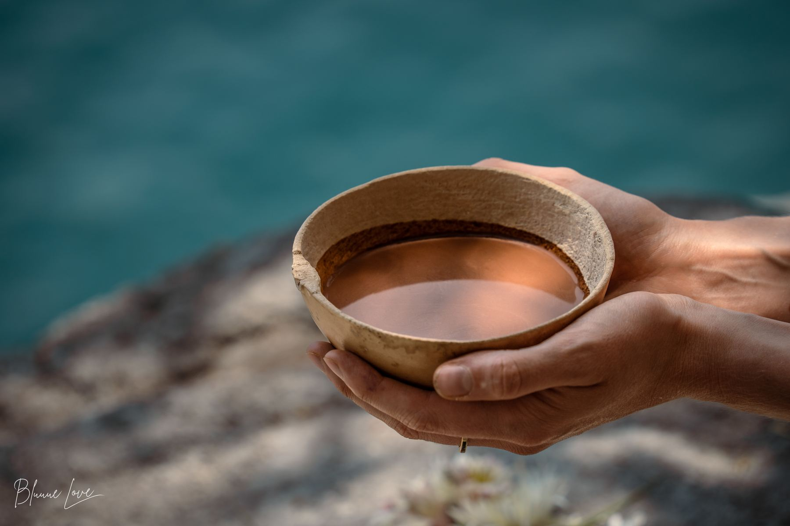

Blog
What Is Ceremonial Cacao?
A complete guide to its origins, quality, and preparation.
← Back to Blog · By Laura Born · March 23, 2026
Ceremonial cacao is pure, minimally processed cacao made by fermenting, sun-drying, and stone-grinding whole cacao beans into a paste, with nothing removed and nothing added. Unlike cocoa powder or chocolate, it keeps the bean's natural fat (cocoa butter) intact and contains no sugar, milk, or fillers. It's the form of cacao closest to how Mayan communities have prepared it for over 4,000 years.
What is ceremonial cacao, exactly?
Ceremonial cacao is whole cacao, prepared the way it has been for thousands of years: beans are harvested, fermented, dried in the sun, and ground, usually on a traditional stone called a metate, into a rich, dark paste. That's it. No pressing out the fat, no alkalizing, no sugar.
The word "ceremonial" doesn't refer to a certification or a legal category. It refers to a tradition, specifically the Mayan and broader Mesoamerican practice of preparing cacao as a drink for gatherings, conversations, and moments that called for presence. For the Maya, cacao was never an everyday commodity. It was considered a gift from the earth, used to mark births, weddings, agreements, and offerings, a tradition still alive today among Mayan families around Lake Atitlán, Guatemala.
When a brand calls its cacao "ceremonial," it's making a claim about how the cacao was grown and processed, and often about where it came from and who made it. That's why sourcing matters so much here, more on that below.
Ceremonial cacao vs. raw cacao vs. cocoa powder vs. chocolate
This is one of the most common points of confusion, and for good reason: all four start with the same plant.
| Cacao type | Ceremonial cacao | Raw cacao | Cocoa powder | Chocolate |
|---|---|---|---|---|
| Processing | Fermented, sun-dried, stone-ground | Often fermented and dried, then ground at low temperatures | Roasted at high heat, fat pressed out, often alkalized | Cocoa solids combined with sugar, milk, and emulsifiers |
| Fat content | Full, cocoa butter stays in | Often reduced or removed | Mostly removed | Cocoa butter plus added fats |
| Added ingredients | None | Usually none | Sometimes alkalizing agents | Sugar, milk, soy lecithin, flavoring |
| % actual cacao | 100% | Usually 100% | Varies, often blended | As low as 25-35% legally |
| Typical use | Ceremony, daily ritual drink | Smoothies, baking, snacking | Baking, hot chocolate mixes | Eating as confectionery |
Is ceremonial cacao the same as raw cacao?
Not quite. Raw cacao is a broad category, it generally means unroasted or low-heat processed, but it's often sold as a powder with the fat removed, similar to cocoa powder. Ceremonial cacao is always a whole paste with the fat intact, traditionally stone-ground rather than industrially processed.
Is ceremonial cacao 100% cacao?
Genuine ceremonial cacao should be. If a product labeled "ceremonial" lists sugar, milk powder, or "natural flavoring" in the ingredients, it's not ceremonial cacao in the traditional sense, it's flavored chocolate using the word as a marketing term.
So, is ceremonial cacao better than regular cacao?
"Better" depends on what you're looking for. If you want a whole, unprocessed food close to its traditional form, with the full range of compounds the bean naturally contains, ceremonial-grade cacao is the least processed option available. If you're baking, raw cacao powder or even regular cocoa may be more practical. Neither is "healthier" in a way we can claim, they're simply different forms for different purposes.
Where real ceremonial cacao comes from, and why that matters
Here's something most guides to ceremonial cacao skip entirely: where and how cacao is grown changes everything about what ends up in your cup, and about what that purchase supports.
Most of the world's cacao is grown as a monoculture: vast plantations of a single species, with shade trees and undergrowth cleared away to maximize yield. Without a forest's natural balance, these systems depend heavily on synthetic fertilizers and pesticides, and the soil weakens over time.
Traditional cacao, the kind ceremonial cacao comes from, is grown differently: as part of a living forest. Cacao trees grow in the understory, shaded by avocado, banana, and native hardwoods, alongside the birds, insects, and soil life that keep the whole system healthy. Research comparing the two systems has found that agroforestry cacao plots can store roughly 2.5 times more carbon than monocultures, while supporting over 100 tree species in a single plot, compared to one in a monoculture.
This is how our cacao is grown. We work directly with Byron and five Mayan families around Lake Atitlán, where cacao has been cultivated this way for generations, hand-harvested at peak ripeness, sun-dried, and stone-ground exactly as it always has been. Nothing about the process has been "modernized" to cut costs, because the families we work with were never trying to industrialize it in the first place.
When you're choosing a ceremonial cacao, the most useful question isn't "is this the healthiest cacao," it's "do I know where this came from, and who made it?" If a brand can't answer that, it's worth wondering what else about the word "ceremonial" might just be marketing.
How to make ceremonial cacao at home
Ceremonial cacao is simple to prepare, there's no special equipment required, though a few traditional touches make it feel like more than just a hot drink.
What you'll need:
- 20-40g of ceremonial cacao paste, chopped or grated (start lower if it's your first time)
- 200-250ml of hot water or a plant-based milk (oat and almond are common; dairy milk works too, though many people prefer plant milk so the cacao's flavor isn't masked)
- Optional: a pinch of cinnamon, chili, or a small amount of natural sweetener like honey
Steps:
- Heat your water or milk until hot but not boiling.
- Add the chopped cacao paste and whisk continuously until fully melted and combined. A small whisk or even a blender can be used.
- Add any spices or sweetener to taste. We love cinnamon, cardamom, a pinch of salt, and raw organic honey. Find all of our favorite recipes here.
- Pour into a cup you like holding. We like to pause here, taking a moment before drinking, making a prayer, singing a song, whispering our intention into the cacao. Yes, it works.
What's the best time of day to drink it?
There's no single right answer, some people prefer it first thing in the morning as part of a quiet routine, others in the afternoon as a pause between tasks. Because cacao naturally contains theobromine, a mild stimulant-like compound, some people choose to avoid it close to bedtime, similar to how they might treat coffee or tea.
Do you need to fast before a cacao ceremony?
In traditional ceremonial settings, some facilitators suggest a light meal or a short period without food beforehand, simply so the cacao isn't competing with a heavy meal, but this is a matter of tradition and personal preference, not a requirement.
What does ceremonial cacao actually do?
This is the question almost everyone asks, and we want to answer it honestly, which means being clear about what we won't claim.
Ceremonial cacao isn't a supplement or a remedy, and we don't sell it as one. It's a whole food. Because it's minimally processed, it retains what the cacao bean naturally contains: magnesium, iron, fiber, plant compounds called flavanols, and theobromine, a naturally occurring compound chemically related to caffeine, but generally considered to have a gentler, longer-lasting effect for most people.
We're not doctors, and we don't make claims about what this will do for your body, your mood, or any health condition, including things like cortisol, blood pressure, or inflammation, which are common questions but require a level of clinical evidence and regulatory approval that goes beyond what we can responsibly claim about a food product.
What we can say is rooted in tradition rather than biochemistry: for thousands of years, cacao has been part of practices built around presence, intention, and connection, used in ceremony, shared in conversation, prepared slowly rather than grabbed on the way out the door. Many people who drink ceremonial cacao describe the ritual itself, the few minutes of pause, the warmth of the cup, as much as anything else.
Does ceremonial cacao "work"?
If the question is whether it functions like a medication with a predictable, measurable effect, that's not how we'd describe it, and we'd be cautious of any brand that does. If the question is whether people find value in the experience of preparing and drinking it, the answer is yes. Many people describe a feeling of heart-opening, mental clarity, and a grounded state of energy.
How often can you drink ceremonial cacao?
Many people incorporate ceremonial cacao into a daily routine, much as they might with coffee or tea. There's nothing inherently wrong with daily use for most healthy adults. As with any food containing natural stimulant-like compounds (theobromine, and small amounts of caffeine), it's worth paying attention to how your body responds, particularly around sleep.
Who should be cautious with cacao?
If you're pregnant or breastfeeding, sensitive to caffeine, managing a heart condition, or taking medication that interacts with stimulants, it's worth discussing any new dietary addition with a doctor first. This is the same general guidance that would apply to coffee, tea, or dark chocolate, not something specific to ceremonial cacao.
Frequently asked questions about ceremonial cacao
Is ceremonial cacao the same as raw cacao?
Not exactly. Raw cacao usually refers to unroasted or low-heat-processed cacao, often sold as a powder with the fat removed. Ceremonial cacao is always a whole paste with the natural fat (cocoa butter) intact, traditionally stone-ground from fermented, sun-dried beans.
Is ceremonial cacao 100% cacao?
It should be. Genuine ceremonial cacao contains no added sugar, milk, or flavoring. If a product called "ceremonial" lists other ingredients, it's being used as a marketing term rather than describing the traditional preparation.
What's the difference between cacao and cocoa?
"Cacao" generally refers to less processed forms, closer to the original bean, while "cocoa" usually refers to roasted, often alkalized products like cocoa powder. The line isn't strictly regulated, so it's worth checking the actual ingredients and processing method rather than relying on the name alone.
Is it okay to drink ceremonial cacao every day?
For most healthy adults, yes, many people enjoy it as part of a daily routine. As with coffee or tea, it's worth noticing how your body responds, especially regarding sleep, since cacao naturally contains theobromine and small amounts of caffeine.
What milk should I use for a cacao ceremony?
Any milk works, but many people prefer plant-based milks like oat or almond, which tend to let the cacao's natural flavor come through more than dairy. This is a matter of taste rather than tradition, use what you enjoy.
How do I prepare ceremonial cacao?
Chop or grate 20-40g of cacao paste, whisk it into 200-250ml of hot water or plant milk until fully melted, and add any spices or natural sweetener to taste. No special equipment is needed.
What's the best time of day to drink ceremonial cacao?
There's no fixed rule, many people drink it in the morning as part of a quiet routine, while others prefer it in the afternoon. Some avoid it close to bedtime due to its natural theobromine and caffeine content.
Who should not drink ceremonial cacao?
Anyone who is pregnant, breastfeeding, sensitive to caffeine, managing a heart condition, or on medication that interacts with stimulants should speak with a doctor before adding cacao to their routine, the same guidance that applies to coffee, tea, and dark chocolate.
What is the healthiest form of cacao?
We can't make claims about which form is "healthiest." What we can say is that ceremonial-grade cacao is the least processed form commonly available, nothing is removed or added. Whether that matters to you depends on what you're looking for.
Try it for yourself
The only real way to understand what ceremonial cacao is (and what it isn't) is to taste cacao that hasn't had anything taken away from it. Ours comes directly from Byron and five Mayan families at Lake Atitlán, grown the way it's been grown for generations, in a living forest rather than a cleared field.
Experience Real Cacao
100% pure ceremonial-grade cacao from Lake Atitlán.
Sourced directly from small-scale family farms and crafted with respect for the traditions, people, and landscapes behind every cup.